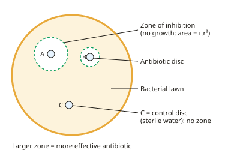

A-level Biology Year 13 · Topic 14
Microbiology
Microbiology is the study of microorganisms: how we grow them safely, count them, identify them, and fight them.
We will cover aseptic technique and culturing, bacterial growth curves and counting methods, bacterial structure and Gram staining, and how viruses including HIV replicate.
Then we look at how antibiotics work, how resistance evolves, and the core practical on zones of inhibition.
- 7 subtopics
- 256 questions
- Free: 14.1 notes and 10 questions
In this topic
- 14.1Aseptic technique and culturing microorganismsFree below · 33 questions
- 14.2Measuring microbial growth and growth curvesOpen in Full Marks · 23 questions
- 14.3Bacterial structure, cell walls and Gram stainingOpen in Full Marks · 30 questions
- 14.4Viruses: structure and replication, including HIVOpen in Full Marks · 35 questions
- 14.5Antibiotics: modes of action and antibiotic sensitivity testingOpen in Full Marks · 78 questions
- 14.6Antibiotic resistance, MRSA and the evolution of resistanceOpen in Full Marks · 29 questions
- 14.7Practical: investigating antimicrobial effects using zones of inhibitionOpen in Full Marks · 28 questions
14.1 · Free notes
Aseptic technique and culturing microorganisms

Key points
- Aseptic technique prevents contamination of the culture by unwanted microorganisms from the environment. It also prevents the escape of cultured microorganisms, which may be pathogens, to the user and surroundings.
- Sterilise culture media and glassware in an autoclave: steam under high pressure at 121 °C for about 15 minutes. This kills all microorganisms, including resistant spores.
- Sterilise an inoculating loop by heating it in a Bunsen flame until red hot. Let it cool briefly in the air near the flame without touching anything. A hot loop would kill the bacteria being transferred.
- Work close to a lit Bunsen burner. The updraught (convection current) of hot air carries airborne microbes away from the work area.
- Flame the neck of bottles after removing the lid. Keep Petri dish lids closed or only slightly open, and wipe the bench with disinfectant before and after work.
- Nutrient agar (solid) or nutrient broth (liquid) supplies a carbon source (e.g. glucose), a nitrogen source (e.g. amino acids), mineral ions, growth factors and water. Agar is a polysaccharide gelling agent that most bacteria cannot digest.
- Inoculate by streak plate, spread plate (a uniform lawn, made with a sterile spreader) or pour plate. Each colony grows from one cell or one clump of cells, so it is a clone.
- Fix the lid with two short strips of adhesive tape and do not seal it fully. This lets oxygen in and stops anaerobic pathogens growing. Incubate plates upside down so condensation does not drip onto the agar.
- In schools, incubate at 25 °C or below, not 37 °C, to reduce the chance of growing human pathogens. Do not open plates after incubation, and autoclave them before disposal. Use non-pathogenic strains and carry out a risk assessment.
- Antibiotic sensitivity (disc diffusion) practical: place discs on a bacterial lawn. A clear zone of inhibition forms where growth is prevented, and a larger zone means a more effective antibiotic.
- Calculate the area of a zone as πr² (e.g. in mm²), using the radius rather than the diameter. Include a control disc (sterile water) and keep the same disc size and concentration for a fair comparison.
In more detail
- Streak plate: spread a loopful in parallel lines across a quarter of the plate, flame the loop, then drag from the first set of lines into the next quarter, and so on, so single colonies appear.
- Selective and differential media: some agar contains chemicals that only let certain bacteria grow, or that change colour depending on the bacterium.
- Why not 37 °C: body temperature favours bacteria adapted to grow in humans, which are more likely to be pathogens.
- Disposal: all plates and equipment are autoclaved before disposal; plates are never opened after incubation in schools.
Practice
Aseptic technique and culturing microorganisms: 10 questions
Pick an answer to check it, or open the answer for the explanation.
1. Why is a lit Bunsen burner placed near the work area when transferring cultures aseptically?
- It dries the agar surface so colonies cannot spread
- Its heat sterilises the air in the whole room
- It warms the agar so that the bacteria grow faster
- Its updraught of hot air carries airborne microorganisms away from the work area
Show answer
D: Its updraught of hot air carries airborne microorganisms away from the work area. The flame creates a convection current that carries air, and airborne microbes, upwards and away from open dishes and bottles. It does not sterilise the room.
2. A student seals a Petri dish completely with tape all the way round. Why is this not recommended in school practicals?
- Carbon dioxide cannot escape and kills the bacteria
- Anaerobic pathogens could grow in the oxygen-free conditions
- Condensation would form on the underside of the agar
- The agar would dry out and crack
Show answer
B: Anaerobic pathogens could grow in the oxygen-free conditions. A fully sealed dish could become anaerobic, allowing dangerous anaerobic pathogens to grow. Short strips of tape keep the lid in place while letting oxygen in.
3. Why are inoculated Petri dishes incubated upside down?
- Condensation collects in the lid and cannot drip onto the agar
- Bacteria fall from the lid onto the agar
- Oxygen reaches the culture more easily
- The agar cannot slip out of the dish
Show answer
A: Condensation collects in the lid and cannot drip onto the agar. Water vapour condenses on the lid. If the dish is inverted, droplets stay in the lid instead of dripping onto the agar and spreading colonies together.
4. Why do schools usually incubate cultures at 25 °C or below rather than 37 °C?
- All bacterial enzymes denature at 37 °C
- Agar melts at 37 °C
- Bacteria cannot divide at 37 °C
- Human pathogens grow best near 37 °C, so a lower temperature reduces the risk
Show answer
D: Human pathogens grow best near 37 °C, so a lower temperature reduces the risk. Human pathogens are adapted to body temperature. Incubating at 25 °C or below makes it less likely they grow, although growth of harmless bacteria is slower.
5. Which treatment is used in an autoclave to sterilise culture media and equipment?
- Ultraviolet light for 1 minute
- Dry heat at 70 °C for 30 minutes
- Steam at 121 °C under high pressure for about 15 minutes
- Boiling water at 100 °C for 5 minutes
Show answer
C: Steam at 121 °C under high pressure for about 15 minutes. Pressurised steam at 121 °C for about 15 minutes kills all microorganisms, including heat-resistant spores. Boiling at 100 °C does not reliably kill spores.
6. An antibiotic disc produces a clear zone of inhibition with a diameter of 18 mm. What is the area of the zone?
- 57 mm²
- 254 mm²
- 1018 mm²
- 28 mm²
Show answer
B: 254 mm². The radius is 9 mm, so area = πr² = π × 9² ≈ 254 mm². Using the diameter in place of the radius would give 1018 mm².
7. Discs on a bacterial lawn gave zones of P = 12 mm, Q = 20 mm, R = 0 mm. A sterile-water disc gave 0 mm. Which conclusion is best supported?
- R was the most effective because its zone was smallest
- Q was the most effective of the three antibiotics
- The water control shows the bacteria resist antibiotic P
- P and Q are equally effective because both gave zones
Show answer
B: Q was the most effective of the three antibiotics. A larger zone of inhibition means growth is prevented over a wider area, so Q is most effective. R had no effect, and the control only shows the disc itself does not inhibit growth.
8. What is the purpose of a control disc soaked in sterile water in an antibiotic sensitivity test?
- To show that any zone is caused by the antibiotic and not the disc or technique
- To kill any contaminating bacteria on the plate
- To provide extra nutrients for the lawn
- To measure the pH of the agar
Show answer
A: To show that any zone is caused by the antibiotic and not the disc or technique. The control shows that the disc and the procedure do not themselves inhibit growth, so a zone around an antibiotic disc can be attributed to the antibiotic.
9. Which procedure produces a uniform lawn of bacteria suitable for testing antibiotic discs?
- Spreading a small volume of culture evenly over the agar with a sterile spreader
- Pouring the culture over the outside of the lid
- Placing a single drop of culture on one side of the plate
- Streaking one line of culture across the plate with a loop
Show answer
A: Spreading a small volume of culture evenly over the agar with a sterile spreader. A spread plate with a sterile spreader gives an even lawn, so a zone of inhibition around a disc is clearly visible. A single streak gives separate colonies rather than a lawn.
10. What is the role of agar in a culture medium?
- It is a gelling agent that most microorganisms cannot digest
- It is the main carbon source for bacterial growth
- It is an antibiotic that prevents fungal growth
- It acts as a buffer to keep the pH constant
Show answer
A: It is a gelling agent that most microorganisms cannot digest. Agar is a polysaccharide that solidifies the medium. Most bacteria cannot digest it, so nutrients such as glucose and amino acids are added separately.
Keep going in Full Marks
Full Marks has 33 questions on Aseptic technique and culturing microorganisms (23 more than here), set out in practice levels. You also get notes and 3D models for all 7 subtopics of Microbiology, plus games, timed exams and past papers.
On your exam board
- OCR ATopic 6.2.1: Cloning and biotechnology
- OCR BTopic 5.2: Gene expression and genetic engineering
- EdexcelTopic 6: Microbiology and pathogens
Not in the AQA and Cambridge specifications.